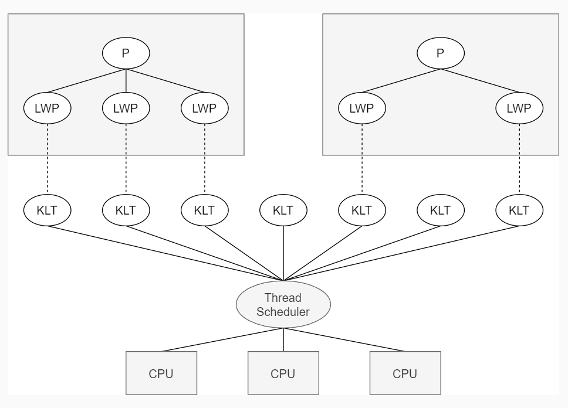
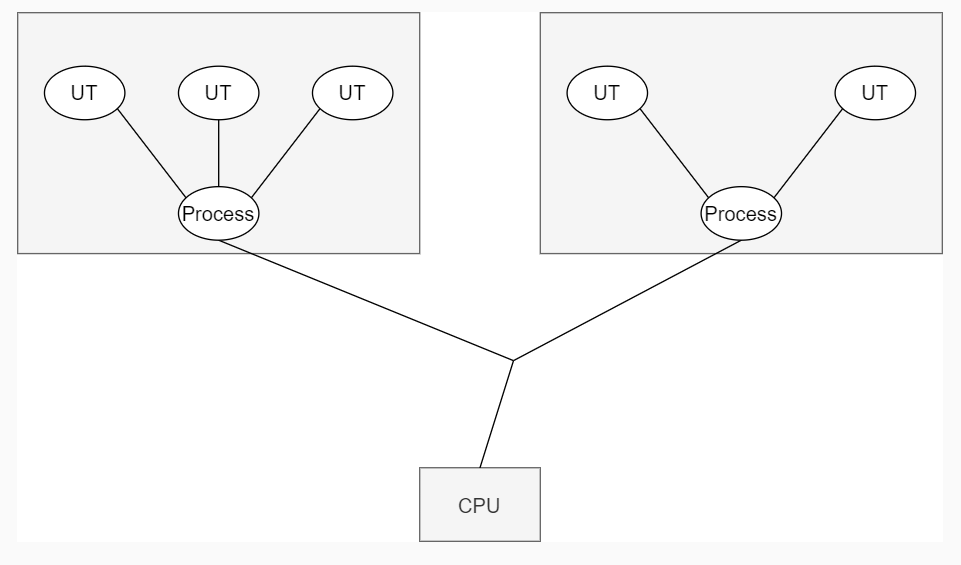
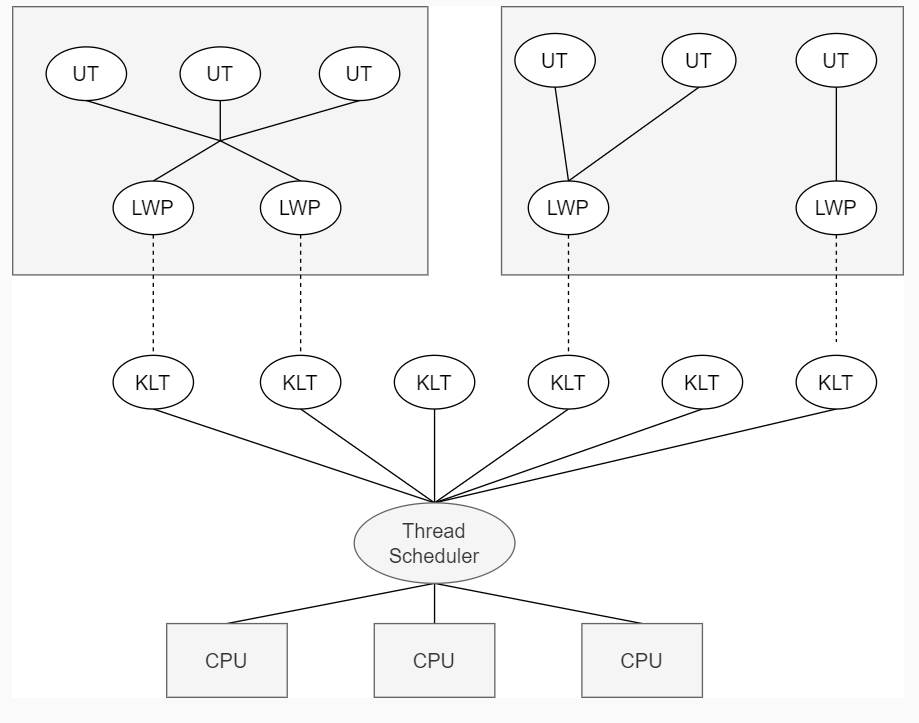
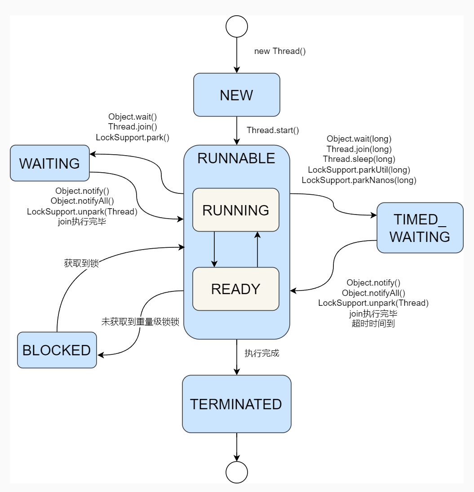

Java并发编程(1): 多线程基础
1. 线程
1.1 进程
在谈论什么是线程之前需要先介绍一下进程。最初的计算机运行方式是串行的，当程序通过网络、IO 请求资源时，必须等待操作完成，在这段等待的时间中计算机的 CPU 资源便被浪费了。为了提高计算机的运行效率，计算机科学家们创建了操作系统，并提出了进程的概念。
程序等待资源返回的过程称为 阻塞。
进程即运行的程序，包括程序代码和资源两个部分，各个进程之间互不干扰，并且保存着各自的运行状态。当遇到网络、IO 等导致进程阻塞时，操作系统将其他可运行的进程调度到 CPU 上运行，提高了计算机的运行效率，给用户一种一段时间内多个程序同时运行的感觉，这被称之为并发。
关于并发与并行，并发指多个任务交替运行，不限制 CPU 核心数；而并行指多个任务在多个 CPU 核心上同时执行，要求是多核 CPU。
1.2 线程
虽然进程的出现提高了计算机的运行效率，但进程对于开发者而言还是存在一些问题：
多进程的通讯较为繁琐，虽然操作系统提供一系列的通信手段，但是对于开发者而言需要熟悉相应操作系统的 API 才能够实现进程通信
进程切换的代价太高了，进程的调度过程涉及进程大量资源替换，是一个耗时的工作
于是，计算机科学家们提出了一个新的概念，线程。多个线程共享同一个进程的地址空间，并且更加轻量，相较进程切换成本有所降低。线程是对逻辑的抽象，而进程是对资源的抽象。
1.3 上下文切换
当操作系统将一个进程（或线程）切换到另一个进程（或线程）时，需要涉及上下文切换。上下文是指某个时间点 CPU 寄存器和程序计数器的内容，在切换前需要保存当前的上下文，下次切换为这个任务时，可以再加载这个任务的状态，这个上下文保存再加载的过程就是上下文切换。
上下文操作会消耗大量的 CPU 时间，适合 IO 密集型应用，而对于计算密集型应用，使用太多线程会导致大量的上下文切换，反而会导致性能降低。
计算密集型指操作主要是 CPU 进行计算，较少涉及 IO 操作。IO 密集型指应用经常需要请求 IO 资源，易进入阻塞状态。
1.4 线程实现方式
(1) 内核线程实现

由内核通过调度器来完成线程切换，优点是每个线程是独立的调度单元，线程之间互不影响，但缺点是线程创建和切换开销大。
(2) 用户线程实现

完全建立在用户空间，内核无法感知线程的存在，内核只对线程所属的进程进行控制。优点是不依赖内核实现，但用户需要在用户态实现线程创建和调度功能，一般只在不支持多线程的操作系统上使用，实现并发。
(3) 混合实现

即存在用户线程，也存在轻量级进程，支持大规模的用户线程并发，同时使用内核线程进行调度和处理映射。用户线程和内核线程的映射有 1:1，M:N 两种形式，Java 线程为 1:1 的形式，Go 的 goroutine 为 M:N 的形式。
2. 在Java中使用多线程
在 Java 中有三种线程创建方式，分别为继承 Thread 类，实现 Runnable 接口和实现 Callable 接口。
2.1 继承 Thread
继承 Thread 的方式如下：
1 | public class Demo { |
注意需要调用 start() 方法后，才会创建线程。
由于 Java 只支持单继承，如果继承了 Thread 类，便无法继承其他类，故直接继承的方式在实际开发中很少使用。
2.2 实现Runnable接口
实现Runnable 接口的方式如下：
1 | public class Demo { |
2.3 实现Callable接口
实现 Runnable 接口没有返回值，如果我们需要任务运行后的返回值，这时候应该实现 Callable 接口，实现如下：
1 | public class Test { |
总结：继承 Thread 的方式较少使用，实现 Runnable 接口在不需要任务返回值的场景使用，需要返回值则采用实现 Callable 接口的方式。
3. 线程状态与切换
3.1 线程状态
Thread 类中定义了线程的状态为
1 | public enum State { |
New
当创建 Thread 并且未调用 start() 方法时，操作系统还未为此创建线程，此时处于 New 状态。
1 | Thread t = new Thread(); |
Runnable
调用start() 方法之后，Thread 处于 Runnable 状态，该状态并不一定在 CPU 上运行。
Runnable在操作系统的状态中还细分为READY和RUNNING，RUNNING才是在 CPU 上运行。Java 团队认为READY切换到RUNNING的时间较短，故在 java 中不进行区分。
TERMINATED
当线程执行完毕后，状态就变为 TERMINATED，该状态不可逆。
BLOKCED
当线程竞争锁失败之后，状态变为 BLOCKED 状态，阻塞等待锁的释放。
BLOCKED 状态不关心内核线程的阻塞态，只针对 Java 层面的锁，例如
synchronized，Lock等。操作系统的线程在遇到 IO 等也会进入阻塞状态，此时Thread的状态是Runnable。
WAITING
该状态下，线程等待并且无时间限制。
TIMED_WAITING
等待状态，但有时间限制，如果超时则转换为 RUNNABLE 状态。
3.2 状态切换
wait和notify
wait 和 notify 是 Java 多线程等待/通知机制的一种，以下是使用示例。
1 | public class WaitAndNotify { |
在上述代码中，线程 A 和线程 B 首先打印出自己的信息，然后使用 notify()方法叫醒另一个正在等待的线程，然后自己使用 wait() 方法陷入等待并释放 lock 锁。
notify()会唤醒一个等待的线程，与其对应的还有一个notifyAll()，会唤醒所有等待的线程。
wait、notify、notify需要和synchronized配合使用。
当一个线程调用 wait() 方法后，会进入 WAITING 状态，直到其他线程调用相应的 notify() 方法。
如果调用 wait(long timeout) ，则进入 TIMED_WAITING 状态。
sleep
线程调用 sleep(long timeout)，进入 TIMED_WAITING 状态，与 wait(long timeout) 的区别是 sleep 不释放锁。
join
调用 join() 之后，当前线程必须等待另一个线程执行完毕，join() 的底层实现是 wait()，与 wait() 的状态转移一致
1 | Thread test = new Thread(...); |
yield
当一个线程调用 yield() 之后，会主动让出 CPU，进入 RUNNABLE 状态等待调度。
park和unpark
每个线程都与一个许可(permit)关联。unpark 函数为线程提供 permit，线程调用 park 则等待（进入 WAITING 状态）并消耗permit。park 和 unpark 方法具体实现比较复杂，这里不展开。
状态转移图
综上，我们可以得到 Thread 的状态转移图。
